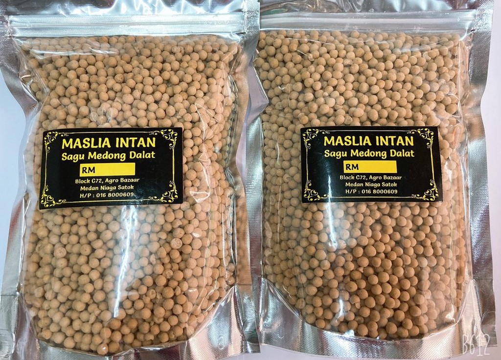

Introduction & History
The Melanau community in Sarawak is deeply connected to the sago palm (rumbia), being its primary cultivators and consumers. During the 1940s Japanese occupation, sago became a crucial staple food. Today, Mukah is the largest sago cultivation area in Sarawak, alongside Matu Daro, Dalat, and Oya.
Traditional Sago Delicacies
-

Sago Balls (Bulu): These traditional, peanut-sized sago beads are enjoyed as snacks, perfectly paired with umai or grilled fish. Although the traditional process is complex and time-consuming, the Melanau people proudly preserve this culinary heritage today.
-

Lemantak & Linut: Sago flour (lemantak) is used to make linut, a thick, glue-like staple dish eaten with sambal belacan and side dishes as a substitute for rice.